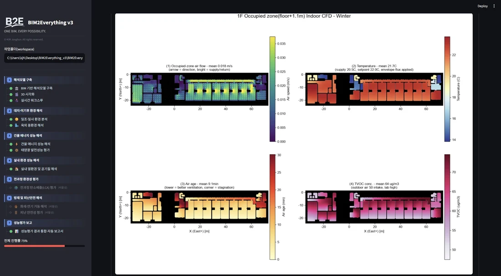

Building Cognition Lab (BCL) develops the scientific foundation for next-generation intelligent buildings — integrating BIM, digital twins, AI, knowledge graphs, and physics-based simulation so buildings can understand themselves and operate autonomously.
BCL aims to establish Building Cognition as a new interdisciplinary research paradigm that bridges architecture, building engineering, artificial intelligence, and digital-twin technologies.
Building Cognition Lab develops the scientific foundation for next-generation intelligent buildings.
Our research integrates Building Information Modeling (BIM), Digital Twins, Artificial Intelligence, Knowledge Graphs, and physics-based simulation to enable buildings to perceive, understand, reason, predict, learn, and autonomously make decisions.
Our vision is to create buildings that continuously understand themselves and their surrounding environments, optimize their own performance, and operate autonomously.
Instead of organizing research by individual technologies, BCL structures its work around the complete cognitive lifecycle of intelligent buildings — from digital representation to autonomous operation.
Creating rich digital representations and digital twins as the foundation of Building Cognition.
Understanding buildings through physics-based simulation across energy, environment, safety, and sustainability.
Developing the cognitive foundation that enables buildings to perceive, understand, reason, predict, and learn.
Transforming Building Cognition into intelligent perception, prediction, and decision-making.
Transforming Building Intelligence into autonomous building operation.

BIM2Everything(B2E) is the digital research platform for developing, validating, and deploying Building Cognition.
B2E powers Building Cognition.
Building Cognition enables Autonomous Buildings.
BCL's forward-looking cognitive directions are grounded in a 20-year (2006~2026) empirical track record across six building-science domains — the field measurements, validated models, and domain knowledge that supply the data and physics behind Building Cognition.
Non-destructive field methods for measuring the real thermal performance of building envelopes — bridging the gap between design specs and as-built reality.
Diagnosis-to-retrofit frameworks that turn aged buildings into zero-energy and green-certified assets through cost-optimized renovation packages.
Physics- and data-driven modeling coupled with machine learning for predictive control, demand flexibility, and grid-interactive efficient buildings.
Ventilation, air-cleaning, and germicidal technologies that improve indoor air quality and occupant comfort while minimizing energy use.
Field programs and scenario analysis that improve energy efficiency for low-income households and inform national pathways to carbon neutrality.
Translating research into national standards, certification schemes, and ZEB system commissioning protocols adopted across the building sector.
A sustained record of 72 journal articles, 120 conference papers, 65 patents and software registrations, 20 technology transfers, and 39 other publications across the fields of building energy, indoor environmental quality, and building controls.
A complete list of 192 publications, 49 patents, 16 software programs, and 20 technology transfers is available in the full CV. (As of July 1, 2026)
BCL seeks to establish Building Cognition as a new scientific discipline for intelligent buildings.
By integrating digital twins, artificial intelligence, semantic knowledge, and physics-based simulation, BCL aims to develop the cognitive foundation that enables fully autonomous, sustainable, and human-centric buildings.
Dr. Jonghun Kim is the founding director of the Building Cognition Lab and serves as Head of the Building Energy Group at the Korea Institute of Energy Research (KIER) and Professor of Energy Engineering at the University of Science & Technology (UST).
As a Japanese Government (MEXT) Scholarship student, he studied at the University of Tokyo, where he received his Ph.D. in Architectural Environment Engineering (energy & indoor air quality) in 2011.
His research bridges building physics, indoor environmental quality, and artificial intelligence — advancing digital twins, building knowledge graphs, and physics-informed AI toward fully autonomous buildings. He holds international credentials including Certified Passive House Designer and Certified Measurement & Verification Professional.
In recognition of his contributions to the nation's building energy and carbon-neutrality agenda, he has been honored with four Ministerial Commendations from the Korean government — awarded by the Ministers of Land, Infrastructure and Transport, Science and ICT, and Trade, Industry and Energy — among numerous other national and academic awards.
| Date | Award | Conferred by |
|---|---|---|
| 2025.06.20 | Best Presentation Paper Award, Summer Annual Conference | SAREK |
| 2025.06.19 | Best Paper Award, Summer Annual Conference | SAREK |
| 2023.12.31 | Commendation (President of KIER) | KIER |
| 2023.12.20 | Commendation (Minister of Land, Infrastructure and Transport) 🎖️ | MOLIT |
| 2023.12.13 | President's Award (President of KIER) | KIER |
| 2023.09.07 | Commendation (President of KIER) | KIER |
| 2022.12.31 | Commendation (President of KIER) | KIER |
| 2022.12.16 | Commendation (President of KIER) | KIER |
| 2022.09.07 | Commendation (President of KIER) | KIER |
| 2022.02.15 | Commendation (Minister of Science and ICT) 🎖️ | MSIT |
| 2021.12.31 | Commendation (President of KIER) | KIER |
| 2020.12.31 | Commendation (President of KIER) | KIER |
| 2020.12.22 | Commendation (Minister of Trade, Industry and Energy) 🎖️ | MOTIE |
| 2019.12.31 | Commendation (President of KIER) | KIER |
| 2019.12.31 | Commendation (Minister of Land, Infrastructure and Transport) 🎖️ | MOLIT |
| 2019.04.05 | Best Presentation Paper Award, Spring Annual Conference | KSES |
| 2019.03.14 | Commendation (Mayor of Seoul) | Seoul Metropolitan Gov. |
| 2018.12.31 | Commendation (President of KIER) | KIER |
| 2018.11.15 | Best Presentation Paper Award, Autumn Annual Conference | KSES |
| 2018.04.06 | Best Presentation Paper Award, Spring Annual Conference | KSES |
| 2016.10.13 | Best Paper Award, Autumn Annual Conference | KSE |
| 2016.03.18 | Best Paper Award, Spring Annual Conference | KSES |
| 2015.12.31 | Commendation (President of KIER) | KIER |
| 2015.09.04 | Commendation (President of KIER) | KIER |
| 2015.06.26 | Best Presentation Paper Award, Summer Annual Conference | SAREK |
| 2014.10.24 | Best Presentation Paper Award, Autumn Annual Conference | AIK |
| 2009.05.27 | Best Poster Award, ROOMVENT 2009 (International Conference) | ROOMVENT (Int'l) |
| 2008.02.19 | Japanese Government (MEXT) Scholarship — selected as research student, The University of Tokyo 🌟 | MEXT, Japan |